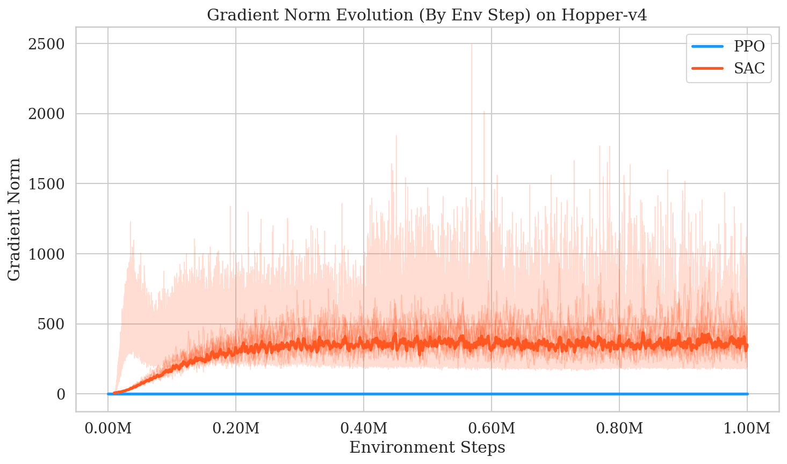
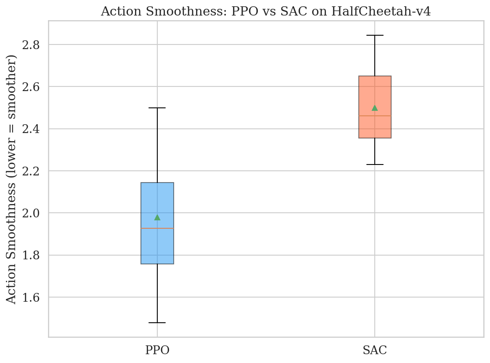
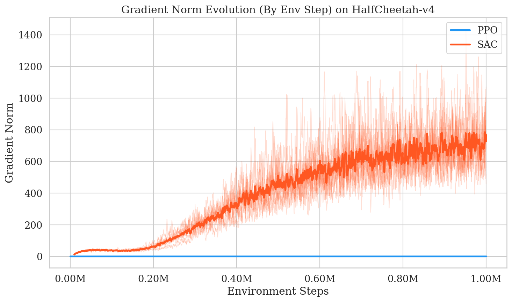
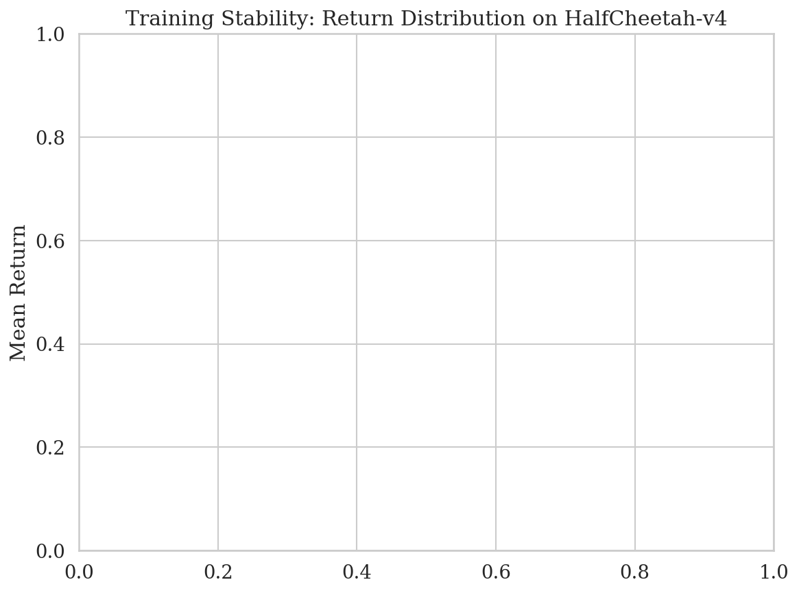
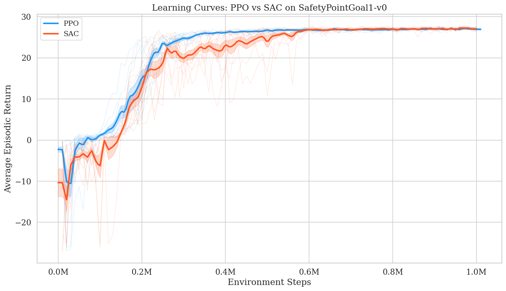
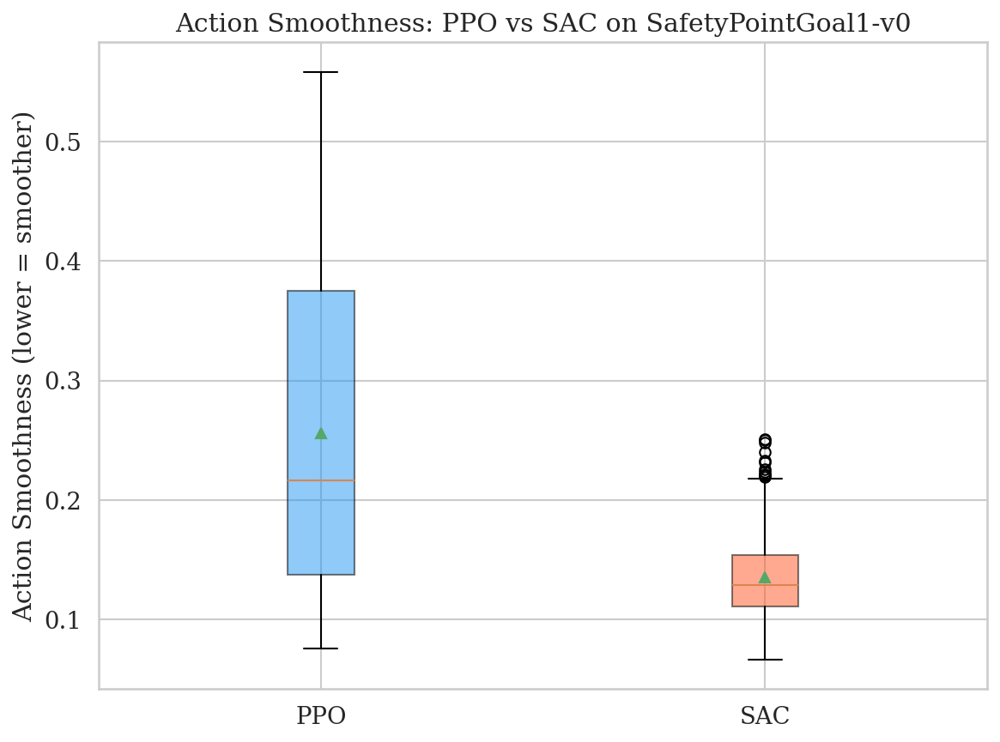
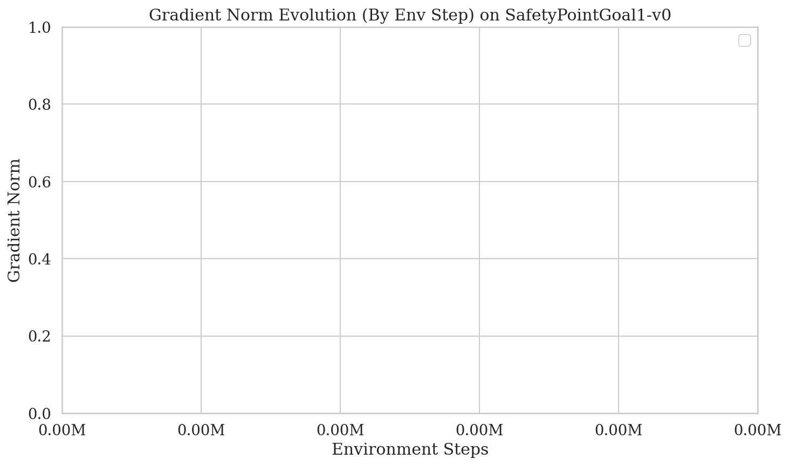
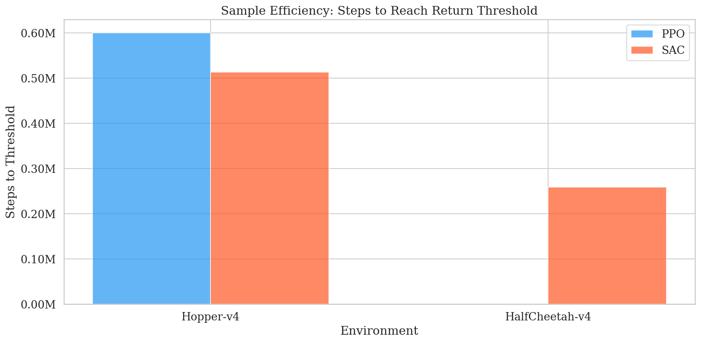

Agenda
- Motivation & Problem Statement
- Gap in the Literature
- Research Questions
- Experimental Methodology
- Results — MuJoCo Environments
- Results — Safety-Gymnasium Environment
- Qualitative Video Analysis
- Discussion & Algorithmic Insights
- Limitations & Future Work
- Conclusion
1. Motivation
- RL is being deployed in safety-critical domains: autonomous vehicles, robotic surgery, industrial control
- Algorithms like PPO (on-policy) and SAC (off-policy) achieve high rewards, but behave very differently in terms of stability, safety, and reliability
- An unsafe action in a real-world system can cause physical damage, injury, or catastrophic failure
- We need to understand which algorithm is safer before deploying RL in the real world
2. Gap in the Literature
What prior work covers:
- Cumulative reward comparisons [Schulman et al., 2017; Haarnoja et al., 2018]
- Sample efficiency benchmarks [Henderson et al., 2018]
- Implementation details for PPO/TRPO [Engstrom et al., 2020]
- On-policy training best practices [Andrychowicz et al., 2021]
What is missing:
- Training and deployment safety comparison
- Policy smoothness under matched conditions
- Constraint adherence in safety-critical envs
- Recovery from perturbations
- Risk sensitivity analysis
3. Research Questions
Primary RQ: In which environmental conditions will PPO have more stable and safer behavior compared to SAC for both training and deployment, when they both have the same compute budgets and evaluation protocols?
Secondary RQ: What are the algorithmic mechanisms that cause the observed differences in stability and safety between PPO and SAC?
We evaluate the secondary RQ through gradient norm analysis, Q-value variance tracking, and policy entropy evolution — linking behavioral differences to on-policy vs. off-policy mechanics.
4. Experimental Methodology
| Component | Details |
|---|---|
| Algorithms | PPO (on-policy) vs SAC (off-policy) via Stable-Baselines3 |
| Network | MLP Policy & Value: 2×256 ReLU |
| Environments | Hopper-v4, HalfCheetah-v4 (MuJoCo) + SafetyPointGoal1-v0 (Safety-Gym) |
| Baseline | Random policy (per environment) |
| Budget | 1,000,000 env steps per run (matched) |
| Seeds | 10 independent seeds per condition (60 total runs) |
| Parallelization | 8× SubprocVecEnv (vectorized environments) |
| Hardware | 2× NVIDIA RTX 3070 (8GB), 36 CPU cores |
| HP Search | LR ∈ {1e-4, 3e-4, 1e-3}, γ ∈ {0.99, 0.995}, BS ∈ {256, 1024} |
| Evaluation | 100 deterministic episodes per seed |
Safety & Stability Metrics
| Metric | What It Measures | Why It Matters for Safety |
|---|---|---|
| Action Smoothness | L2 norm of consecutive action differences | Jerky actions = mechanical wear on real robots |
| Constraint Violations (Cost) | Number of hazard boundary breaches | Direct measure of safety compliance |
| Feasibility Rate | % episodes with zero violations | Reliability of safe operation |
| Recovery Ratio | Performance after state perturbation | Robustness to unexpected disturbances |
| Policy Entropy | Randomness of action selection | Exploration vs. exploitation balance |
| Q-Value Variance (SAC) | Uncertainty of value estimates | Confidence in decision making |
| Gradient Norms | Magnitude of parameter updates | Training stability indicator |
5. Results Overview

Mean ± standard error across 10 seeds, evaluated over 100 deterministic episodes each.
Hopper-v4 — Learning Curves

Hopper-v4 — Action Smoothness

Hopper-v4 — Gradient Norm Evolution

Hopper-v4 — Seed Variance

HalfCheetah-v4 — Learning Curves

HalfCheetah-v4 — The Reward Hacking Phenomenon

PPO's agent learned to run completely upside down, sliding on its head. Because PPO's trust region prevents risky policy changes, the agent got permanently trapped in this local optimum (~1100 reward).
HalfCheetah-v4 — Gradient Norms

HalfCheetah-v4 — Seed Variance

6. SafetyPointGoal1-v0 — Learning Curves

SafetyPointGoal1-v0 — Constraint Violations

SafetyPointGoal1-v0 — Reward-Safety Tradeoff

SafetyPointGoal1-v0 — Action Smoothness

SafetyPointGoal1-v0 — Gradient Norms

Recovery from Perturbations

| Environment | PPO | SAC |
|---|---|---|
| Hopper-v4 | 1.96 | 1.94 |
| HalfCheetah-v4 | 2.34 | 2.30 |
| SafetyPointGoal1 | 1.83 | 1.67 |
Sample Efficiency

7. Qualitative Video Analysis
| Video | Observed Behavior | Metric Correlation |
|---|---|---|
| hopper-v4_ppo.mp4 | Stable, repetitive, cautious hopping rhythm | Smoothness: 0.129 ✓ |
| hopper-v4_sac.mp4 | Wild, explosive micro-adjustments in leg actuators | Smoothness: 0.397 ✗ |
| halfcheetah-v4_ppo.mp4 | Running completely upside down (reward hacking!) | Return: 1138 (local optimum) |
| halfcheetah-v4_sac.mp4 | Upright, fast sprinting gait | Return: 6270 (global optimum) |
| safety_ppo.mp4 | Navigates toward goal, clips hazard boundaries frequently | Cost: 54.6 violations |
| safety_sac.mp4 | Navigates toward goal, course-corrects faster near hazards | Cost: 50.3 violations |
All videos rendered at 30 fps using headless EGL GPU rendering on RTX 3070.
8. Discussion — Answering the Research Questions
Primary RQ — When is PPO safer?
PPO is safer in physics-based balance tasks (Hopper) where its trust-region clipping produces 3× smoother actions. However, this same conservatism can trap PPO in local optima (upside-down HalfCheetah), and in constrained navigation tasks, SAC actually achieves fewer violations.
Secondary RQ — What mechanisms cause the differences?
- PPO's clipped surrogate objective → stable gradients → smooth actions → but risk of local optima entrapment
- SAC's entropy maximization → volatile gradients → jerky actions → but escapes local optima
- SAC's replay buffer → data reuse → faster learning of spatial constraints → fewer safety violations
The Core Insight
PPO excels at deployment safety (smooth, predictable actions)
SAC excels at constraint compliance (fewer boundary violations)
The choice depends on what kind of safety matters most in your application.
| Safety Dimension | Winner | Evidence |
|---|---|---|
| Action Smoothness (Hopper) | PPO | 3× smoother (0.129 vs 0.397) |
| Exploration Robustness | SAC | Avoids local optima (6270 vs 1138) |
| Constraint Violations | SAC | 8% fewer violations (50.3 vs 54.6) |
| Gradient Stability | PPO | Flat norms vs SAC's violent spikes |
| Recovery from Perturbation | Tie | Both > 1.0 across all envs |
9. Limitations & Future Work
Limitations
- Only one safety environment tested (SafetyPointGoal1-v0)
- Standard SB3 implementations — no custom safety-aware modifications (e.g., CPO, FOCOPS)
- Fixed 1M step budget — longer training may change conclusions
- MLP architecture only — no CNN/attention networks
- No real-world hardware validation (sim-only)
Future Work
- Add constrained RL algorithms (CPO, FOCOPS, SafePPO)
- Test on more Safety-Gym environments (SafetyCarGoal, SafetyDoggoGoal)
- Increase compute budget to 5–10M steps
- Sim-to-real transfer on physical robot
- Implement Lagrangian reward shaping for explicit cost minimization
- Investigate reward hacking mitigation strategies
10. Conclusion
- We performed a rigorous, reproducible safety comparison of PPO vs SAC across 3 environments, 10 seeds each, with 7 custom safety metrics
- PPO produces 3× smoother actions — critical for robotic deployment
- SAC achieves 5.5× higher performance in unconstrained environments
- SAC shows fewer constraint violations in safety-critical environments thanks to its replay buffer
- We discovered a reward hacking phenomenon in PPO (HalfCheetah) — a direct consequence of over-conservative trust-region optimization
- Recommendation: Use PPO when actuator wear matters; use SAC when constraint compliance matters
References
- [1] Schulman et al., "Proximal Policy Optimization Algorithms," arXiv:1707.06347, 2017.
- [2] Haarnoja et al., "Soft Actor-Critic: Off-Policy Maximum Entropy Deep RL with a Stochastic Actor," ICML, 2018.
- [3] Henderson et al., "Deep Reinforcement Learning That Matters," AAAI, 2018.
- [4] Engstrom et al., "Implementation Matters in Deep RL: A Case Study on PPO and TRPO," ICLR, 2020.
- [5] Andrychowicz et al., "What Matters in On-Policy Reinforcement Learning? A Large-Scale Empirical Study," ICLR, 2021.
- [6] Ray et al., "Benchmarking Safe Exploration in Deep Reinforcement Learning," OpenAI Technical Report, 2019.
- [7] Ji et al., "Safety-Gymnasium: A Unified Safe Reinforcement Learning Benchmark," NeurIPS Datasets and Benchmarks Track, 2023.
- [8] Achiam et al., "Constrained Policy Optimization," ICML, 2017.
Thank You!
Questions?
Farina Salman · Rachna Sunilkumar Deshpande
Abdulaziz Al-Tayar · Harsh Patel
University of Ottawa — CSI 5180 / CEG 5270